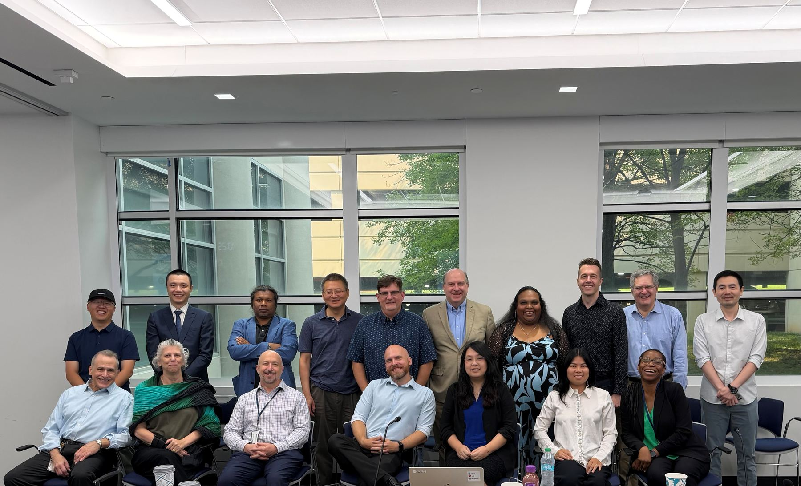
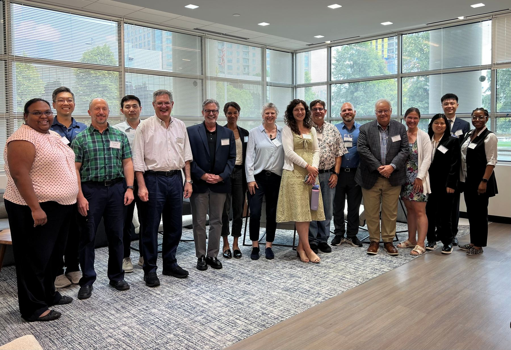

Accelerate BASSO Network Center
The Network meets in person each year, bringing the four U01 project teams, the coordinating center, and the External Advisory Board together for shared planning and cross-project work.

